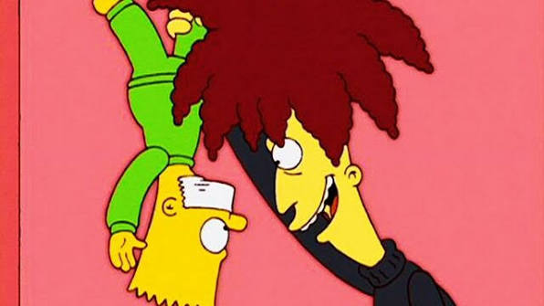
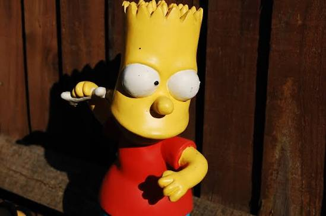

Барт (Эль Барто) Симпсон — гроза Спрингфилдской школы, мастер граффити,
профессиональный скейтбордист и гроза директора Скиннера!
Его коронные фразочки: "Eat my shorts!" и "¡Ay, caramba!".
Он пришел на этот сайт к Евгению Белевитину, чтобы устроить полный хаос и взорвать ваши мониторы!